MakiD
É a minha homepage oficial de algumas postagens que eu faço em canais e redes sociais sobre jogos e algumas músicas e trilhas, tudo num só lugar!
Conexões & Mais
Canal principal de vídeos das lives de jogos especiais dos fins de semana às 20h00, shorts, e novidades do canal!
Ver

Canal principal de lives de jogos diversos durante a semana e fins de semana às 21h00!
Ver
Canal de lives horizontais simultâneas com a Twitch!
Ver
Canal de lives verticais simultânas com a Twitch e alguns clipes!
Ver